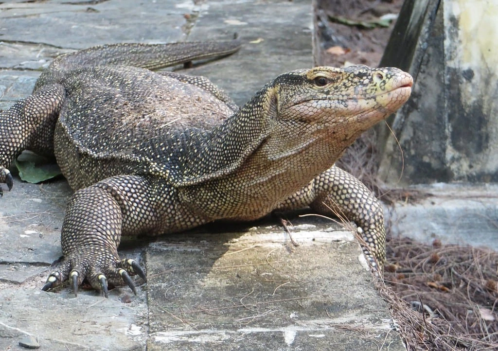

The Asian water monitor (Varanus salvator)  is a large varanid lizard native to South and Southeast Asia. It is one of the most common monitor lizards in Asia, ranging from coastal northeast India, Bangladesh, Sri Lanka, mainland Southeast Asia, and southern China to Indonesian islands where it lives close to water.
It was described by Laurenti in 1768 and is among the largest squamates in the world.